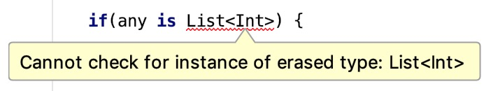

Item 46: Use inline modifier for functions with parameters of functional types
You might have noticed that nearly all Kotlin stdlib higher-order functions have an inline modifier. Have you ever asked yourself why are they defined in this way? Here is, for instance, how the repeat function from Kotlin stdlib is implemented:
inline fun repeat(times: Int, action: (Int) -> Unit) {
for (index in 0 until times) {
action(index)
}
}
What this inline modifier does is that during compilation, all uses of this function are replaced with its body. Also, all calls of function arguments inside repeat are replaced with those functions bodies. So the following repeat function call:
repeat(10) {
print(it)
}
During compilation will be replaced with the following:
for (index in 0 until 10) {
print(index)
}
It is a significant change compared to how functions are executed normally. In a normal function, execution jumps into this function body, invokes all statements, then jumps back to the place where the function was invoked. Replacing calls with bodies is a significantly different behavior.
There are a few advantages to this behavior:
- A type argument can be reified
- Functions with functional parameters are faster when they are inline
- Non-local return is allowed
There are also some costs to using this modifier. Let’s review both all the advantages and costs of inline modifier.
A type argument can be reified
Java does not have generics in older versions. They were added to the Java programming language in 2004 within version J2SE 5.0. They are still not present in the JVM bytecode though. Therefore during compilation, generic types are erased. For instance List<Int> compiles to List. This is why we cannot check if an object is List<Int>. We can only check if it is a List.
any is List<Int> // Error
any is List<*> // OK

For the same reason, we cannot operate on a type argument:
fun <T> printTypeName() {
print(T::class.simpleName) // ERROR
}
We can overcome this limitation by making a function inline. Function calls are replaced with its body, so type parameters uses can be replaced with type arguments, by using the reified modifier:
inline fun <reified T> printTypeName() {
print(T::class.simpleName)
}
// Usage
printTypeName<Int>() // Int
printTypeName<Char>() // Char
printTypeName<String>() // String
During compilation, the body of printTypeName replaces usages, and the type argument replaces the type parameter:
print(Int::class.simpleName) // Int
print(Char::class.simpleName) // Char
print(String::class.simpleName) // String
reified is a useful modifier. For instance, it is used in filterIsInstance from the stdlib to filter only elements of a certain type:
class Worker
class Manager
val employees: List<Any> =
listOf(Worker(), Manager(), Worker())
val workers: List<Worker> =
employees.filterIsInstance<Worker>()
Functions with functional parameters are faster when they are inlined
To be more concrete, all functions are slightly faster when they are inlined. There is no need to jump with execution and to track the back-stack. This is why small functions that are used very often in the stdlib are often inlined:
inline fun print(message: Any?) {
System.out.print(message)
}
This difference is most likely insignificant when a function does not have any functional parameter though. This is the reason why IntelliJ gives such a warning:
To understand why, we first need to understand what the problem is with operating on functions as objects. These kinds of objects, created using function literals, need to be held somehow. In Kotlin/JS, it is simple since JavaScript treats functions as first-class citizens. Therefore in Kotlin/JS, it is either a function or a function reference. On Kotlin/JVM, some object needs to be created, either using a JVM anonymous class or a normal class. Therefore the following lambda expression:
val lambda: ()->Unit = {
// code
}
Will be compiled to a class. Either a JVM anonymous class:
// Java
Function0<Unit> lambda = new Function0<Unit>() {
public Unit invoke() {
// code
}
};
Or it can be compiled into a normal class defined in a separate file:
// Java
// Additional class in separate file
public class Test$lambda implements Function0<Unit> {
public Unit invoke() {
// code
}
}
// Usage
Function0 lambda = new Test$lambda()
There is no significant difference between those two options.
Notice that the function type translates to the Function0 type. This is what a function type with no arguments in JVM is compiled to. And the same is true with other function types:
()->Unitcompiles toFunction0<Unit>()->Intcompiles toFunction0<Int>(Int)->Intcompiles toFunction1<Int, Int>(Int, Int)->Intcompiles toFunction2<Int, Int, Int>
All those interfaces are generated by the Kotlin compiler. You cannot use them explicitly in Kotlin though because they are generated on demand. We should use function types instead. Although knowing that function types are just interfaces opens your eyes to some new possibilities:
class OnClickListener: ()->Unit {
override fun invoke() {
// ...
}
}
As illustrated in Item 45: Avoid unnecessary object creation, wrapping the body of a function into an object will slow down the code. This is why among the two functions below, the first one will be faster:
inline fun repeat(times: Int, action: (Int) -> Unit) {
for (index in 0 until times) {
action(index)
}
}
fun repeatNoinline(times: Int, action: (Int) -> Unit) {
for (index in 0 until times) {
action(index)
}
}
The difference is visible, but rarely significant in real-life examples. Although if we design our test well, you can see this difference clearly:
@Benchmark
fun nothingInline(blackhole: Blackhole) {
repeat(100_000_000) {
blackhole.consume(it)
}
}
@Benchmark
fun nothingNoninline(blackhole: Blackhole) {
noinlineRepeat(100_000_000) {
blackhole.consume(it)
}
}
The first one takes on my computer on average 189 ms. The second one takes on average 447 ms. This difference comes from the fact that in the first function we only iterate over numbers and call an empty function. In the second function, we call a method that iterates over numbers and calls an object, and this object calls an empty function. All that difference comes from the fact that we use an extra object (Item 45: Avoid unnecessary object creation).
To show a more typical example, let’s say that we have 5 000 products and we need to sum up the prices of the ones that were bought. We can do it simply by:
users.filter { it.bought }.sumByDouble { it.price }
In my machine, it takes 38 ms to calculate on average. How much would it be if filter and sumByDouble functions were not inline? 42 ms on average on my machine. This doesn’t look like a lot, but this is ~10% difference every time when you use methods for collection processing.
A more significant difference between inline and non-inline functions manifests itself when we capture local variables in function literals. A captured value needs to be wrapped as well into some object and whenever it is used, it needs to be done using this object. For instance, in the following code:
var l = 1L
noinlineRepeat(100_000_000) {
l += it
}
A local variable cannot be really used directly in non-inlines lambda. This is why during compilation time, the value of a will be wrapped into a reference object:
val a = Ref.LongRef()
a.element = 1L
noinlineRepeat(100_000_000) {
a.element = a.element + it
}
This is a more significant difference because often, such objects might be used many times: every time we use a function created by a function literal. For instance, in the above example, we use a two times. Therefore extra object use will happen 2 * 100 000 000. To see this difference, let’s compare the following functions:
@Benchmark
// On average 30 ms
fun nothingInline(blackhole: Blackhole) {
var l = 0L
repeat(100_000_000) {
l += it
}
blackhole.consume(l)
}
@Benchmark
// On average 274 ms
fun nothingNoninline(blackhole: Blackhole) {
var l = 0L
noinlineRepeat(100_000_000) {
l += it
}
blackhole.consume(l)
}
The first one on my machine takes 30 ms. The second one 274 ms. This comes from the accumulated effects of the facts that the function is compiled to be an object, and the local variable needs to be wrapped. This is a significant difference. Since in most cases we don’t know how functions with parameters of functional types will be used, when we define a utility function with such parameters, for instance for collection processing, it is good practice to make it inline. This is why most extension functions with parameters of functional types in the stdlib are inlined.
Non-local return is allowed
Previously defined repeatNoninline looks much like a control structure. Just compare it with a if or for-loop:
if(value != null) {
print(value)
}
for (i in 1..10) {
print(i)
}
repeatNoninline(10) {
print(it)
}
Although one significant difference is that return is not allowed inside:
fun main() {
repeatNoinline(10) {
print(it)
return // ERROR: Not allowed
}
}
This is the result of what function literals are compiled to. We cannot return from main, when our code is located in another class. There is no such limitation when a function literal is inlined. The code will be located in the main function anyway.
fun main() {
repeat(10) {
print(it)
return // OK
}
}
Thanks to that, functions can look and behave more like control structures:
fun getSomeMoney(): Money? {
repeat(100) {
val money = searchForMoney()
if(money != null) return money
}
return null
}
Costs of inline modifier
Inline is a useful modifier but it should not be used everywhere. Inline functions cannot be recursive. Otherwise, they would replace their calls infinitely. Recurrent cycles are especially dangerous because, at the moment, it does not show an error in the IntelliJ:
inline fun a() { b() }
inline fun b() { c() }
inline fun c() { a() }
Inline functions cannot use elements with more restrictive visibility. We cannot use private or internal functions or properties in a public inline function. In fact, an inline function cannot use anything with more restrictive visibility:
internal inline fun read() {
val reader = Reader() // Error
// ...
}
private class Reader {
// ...
}
This is why they cannot be used to hide implementation, and so they are rarely used in classes.
Finally, they make our code grow. To see the scale, let’s say that I really like printing 3. I first defined the following function:
inline fun printThree() {
print(3)
}
I liked to call it 3 times, so I added this function:
inline fun threePrintThree() {
printThree()
printThree()
printThree()
}
Still not satisfied. I’ve defined the following functions:
inline fun threeThreePrintThree() {
threePrintThree()
threePrintThree()
threePrintThree()
}
inline fun threeThreeThreePrintThree() {
threeThreePrintThree()
threeThreePrintThree()
threeThreePrintThree()
}
What are they all compiled to? First two are very readable:
inline fun printThree() {
print(3)
}
inline fun threePrintThree() {
print(3)
print(3)
print(3)
}
Next two were compiled to the following functions:
inline fun threeThreePrintThree() {
print(3)
print(3)
print(3)
print(3)
print(3)
print(3)
print(3)
print(3)
print(3)
}
inline fun threeThreeThreePrintThree() {
print(3)
print(3)
print(3)
print(3)
print(3)
print(3)
print(3)
print(3)
print(3)
print(3)
print(3)
print(3)
print(3)
print(3)
print(3)
print(3)
print(3)
print(3)
print(3)
print(3)
print(3)
print(3)
print(3)
print(3)
print(3)
print(3)
print(3)
}
This is an abstract example, but it shows a big problem with inline functions: code grows really quickly when we overuse them. I met with this problem in a real-life project. Having too many inline functions calling each other is dangerous because our code might start growing exponentially.
Crossinline and noinline
There are cases when we want to inline a function, but for some reason, we cannot inline all function type arguments. In such cases we can use the following modifiers:
crossinline- it means that the function should be inlined but non-local return is not allowed. We use it when this function is used in another scope where non-local return is not allowed, for instance in another lambda that is not inlined.noinline- it means that this argument should not be inlined at all. It is used mainly when we use this function as an argument to another function that is not inlined.
inline fun requestNewToken(
hasToken: Boolean,
crossinline onRefresh: ()->Unit,
noinline onGenerate: ()->Unit
) {
if (hasToken) {
httpCall("get-token", onGenerate) // We must use
// noinline to pass function as an argument to a
// function that is not inlined
} else {
httpCall("refresh-token") {
onRefresh() // We must use crossinline to
// inline function in a context where
// non-local return is not allowed
onGenerate()
}
}
}
fun httpCall(url: String, callback: ()->Unit) {
/*...*/
}
It is good to know what the meaning of both modifiers is, but we can live without remembering them as IntelliJ IDEA suggests them when they are needed:

Summary
The main cases where we use inline functions are:
- Very often used functions, like
print. - Functions that need to have a reified type passed as a type argument, like
filterIsInstance. - When we define top-level functions with parameters of functional types. Especially helper functions, like collection processing functions (like
map,filter,flatMap,joinToString), scope functions (likealso,apply,let), or top-level utility functions (likerepeat,run,with).
We rarely use inline functions to define an API and we should be careful with cases when one inline function calls some other inline functions. Remember that code growth accumulates.